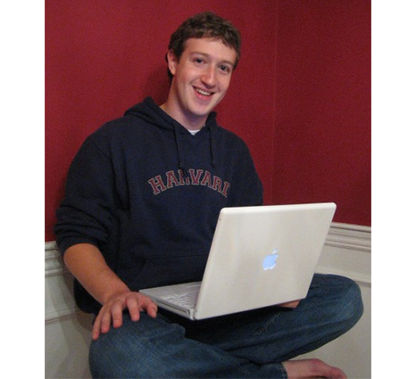
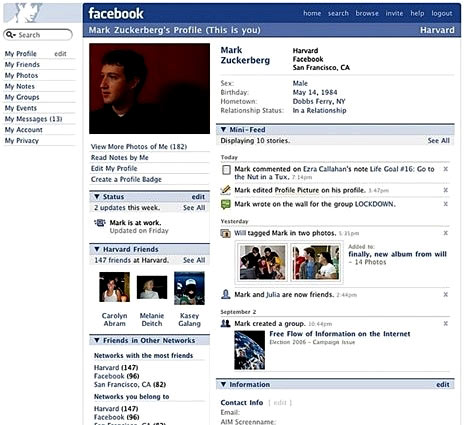
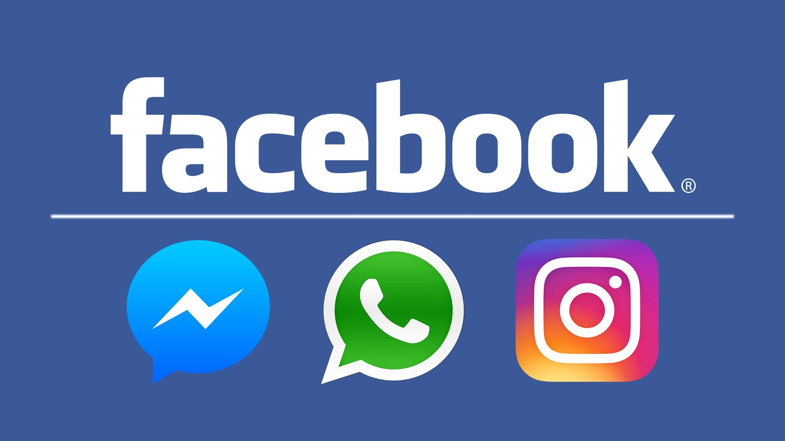
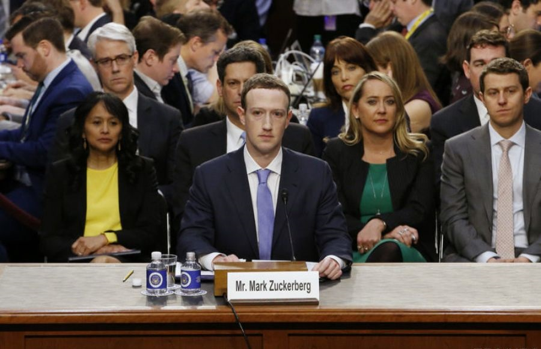

Компания Facebook Inc. была основана 4 февраля 2004 г. четырьмя студентами, которые обучались в Гарвардском университете: Марком Цукербергом, Эдуардо Саверином, Дастином Московицем и Крисом Хьюзом. В это же время появился одноименный веб-сайт.

- 
- 
Идея Facebook восходит к ранней юности Марка Цукерберга, когда он учился в частной школе в Нью-Гэмпшире. В школе ежегодно публиковался справочник с именами, адресами и фотографиями учеников (буквально «книга лиц», «лицевая книга» — Facebook), и когда Цукерберг поступил в Гарвардский университет, то выступил с инициативой создания аналогичного сетевого ресурса, однако администрация учебного заведения отказала ему, сославшись на политику конфиденциальности. Тогда 28 октября 2003 года Марк Цукерберг, будучи студентом-второкурсником, написал код для интернет-сайта Facemash, в котором использовались фотографии людей, размещённые по парам, с целью выбрать, кто из них более привлекателен.
Чтобы достичь этого, Цукерберг взломал защищённые разделы компьютерной сети Гарвардского университета и скопировал частные фото. Гарвард в то время не имел студенческого «альбома». Facemash привлекла 450 посетителей и 22 000 фотопросмотров в течение первых двух часов работы.
Сайт быстро разрастался, но был закрыт спустя несколько дней администрацией Гарварда. Цукерберг был обвинён администрацией в нарушении безопасности, авторских прав, неприкосновенности частной жизни; наказанием должно было стать исключение. В конечном итоге, обвинения были сняты. Цукерберг сосредоточился на первоначальном проекте. Он открыл сайт для своих однокурсников, где люди начали делиться своими замечаниями по поводу проекта.
В следующем семестре, в январе 2004 года, Цукерберг начал писать код для нового веб-сайта. Он был вдохновлён, по его словам, редакционной статьёй в Harvard Crimson об инциденте Facemash. 4 февраля 2004 года Цукерберг запустил Thefacebook по адресу thefacebook.com
Изначально он был доступен только для студентов Гарварда. Чуть позже регистрацию открыли для университетов Бостона. Начиная с сентября 2006 г., Facebook стал доступен для всех пользователей интернета.
Благодаря этому сайту Марк Цукерберг в 23 года стал самым молодым миллиардером планеты.

9 апреля 2012 года Facebook объявил о приобретении фотосервиса Instagram за 1 млрд долларов. Как отмечается в пресс-релизе Facebook, стоимость сделки составила около миллиарда долларов. 19 февраля 2014 года компания Facebook Inc. объявила о приобретении WhatsApp за 19 млрд долларов. Таким образом, в мае 2020 года общее количество пользователей сервисов Facebook составило 3 млрд - две трети от общего количества пользователей интернета по всему миру.
Естественно, это рекордное число пользователей. Facebook изменил представление людей о коммуникации. Социальные сети и мессенджеры сегодня - неотъемлимая часть жизни почти каждого человека.
В течение первого квартала 2020 года компания получила 17,74 миллиарда долларов дохода.

В дни президентских выборов США 2016 года на Facebook обрушился вал критики: руководство соцсети не смогло воспрепятствовать распространению ложных новостей, что, по мнению некоторых пользователей и СМИ, могло повлиять на общественное мнение и в конечном итоге привести к победе Дональда Трампа. После тех же выборов компании удалось найти около 470 фейковых аккаунтов и страниц, которые распространяли политическую рекламу и, по мнению Facebook, управлялись из России. С июня 2015 года по май 2017 года они разместили около трех тысяч объявлений примерно за 100 тысяч долларов. Британской компании Cambridge Analytica удалось собрать сведения о поведении 50 миллионов американцев в Facebook, чтобы затем продавать им таргетированную политическую рекламу. Facebook знал об утечке персональных данных, но не предпринимал никаких мер.
В апреле 2018 года Марк Цукерберг в течение почти пяти часов давал показания в американском сенате. Представители юридического комитета и комитета по торговле, науке и транспорту задавали вопросы о данных пользователей и о вмешательстве в выборы с помощью соцсети. Цукерберг признал, что компания допустила ошибки, но пообещал принять меры для лучшего контроля за безопасностью данных.
В 2020 году Apple, Facebook, Google и Amazon обвинили в том, что они занимают слишком большую долю рынка и препятствуют конкуренции. Противники их доминирования считают, что эти компании «слишком большие, чтобы рухнуть» (too big to fail) — то есть они заняли такое положение, когда их банкротство повлечет катастрофические последствия для экономики в целом, и правительство будет спасать их, чтобы не допустить этих последствий. Например, утверждается, что Instagram был продан под давлением: основатели боялись, что Facebook разрушит их бизнес.